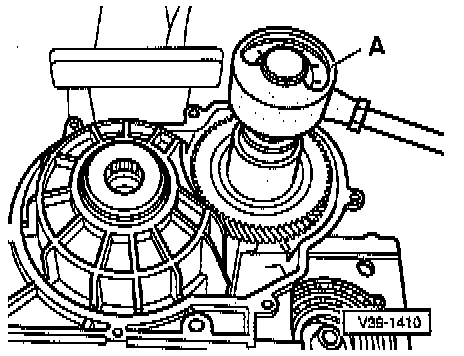

Differential
ADJUSTING
- Tighten bearing body with tool 3155 to 150 Nm (111 ft lb) up to stop and secure.
- Tighten adjusting ring to 50 Nm (37 ft lb) and mark.
NOTE: Do not rotate the differential while making this measurement as the bearings will otherwise settle and falsify the result of the measurement.
- Turn adjusting ring again so it advances the distance of five locking lugs, then secure so that preload of tapered roller bearings is set.
FRICTION (TURNING) TORQUE, CHECKING

A -Torque gauge, commercially available 0- 600 Nm (0 - 50 inch lb)
- Oil bearing beforehand with gear oil.
The friction torque of new tapered roller bearings must be 60 - 80 Nm (5 - 7 inch lb) greater than friction torque measured at the drive pinion.
Example:
Pinion shaft (measurement) plus Differential (average) equals Friction torque of differential + pinion shaft
300 Nm + 70 Nm = 370 Nm
NOTE: In the case of used bearings, substitute the friction measured for the drive pinion.